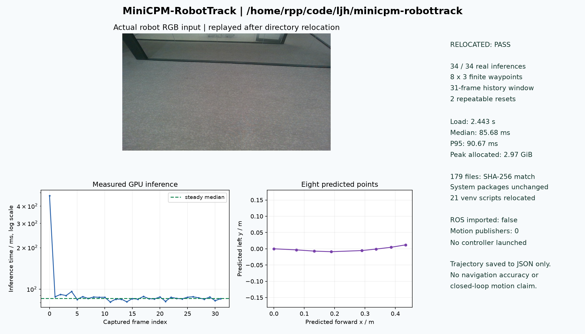

本体部署与环境隔离
将 MiniCPM-RobotTrack 服务源码、主模型与视觉编码器完整迁入独立目录，建立虚拟环境并复用本体 CUDA。逐文件核验 179 个源码与模型文件的 SHA-256，迁移后重新测试；系统 Python 包清单保持一致。
轮式双臂平台上的视觉语言导航实践
我以 R1 Pro / RPP 两轮差速平台为载体，将语言目标跟随后端从服务器部署到机器人本体，核对真实相机输入、历史状态与轨迹输出。当前已完成 MiniCPM-RobotTrack 的本体 GPU 回放推理验证，继续推进观测坐标、轨迹与底盘控制的衔接，为长程 VLN 的实机实验建立基础。
我的主线是长程视觉语言导航（VLN）。在这台轮式平台上，先以自然语言目标跟随作为模型落地入口，逐步核对观测、历史和动作接口；本阶段尚未验证长程指令执行、语义地图或偏航恢复。
将 MiniCPM-RobotTrack 服务源码、主模型与视觉编码器完整迁入独立目录，建立虚拟环境并复用本体 CUDA。逐文件核验 179 个源码与模型文件的 SHA-256，迁移后重新测试；系统 Python 包清单保持一致。
从头部相机采集 32 帧 1280×720 RGB 图像，保存后在本体连续推理，检查 31 帧历史窗口的填充与滑动。另做两次独立会话重置，核对相同首帧的输出一致性。
验证每次输出均为 8 个有限数值轨迹点（x、y、θ），梳理其与两轮差速底盘线速度、角速度接口的关系。相机光学坐标到 base_link 的 TF、轨迹坐标约定及控制权归属仍需在运动接入前核实。
计划将语言指定目标、连续视觉观测、深度距离和局部轨迹接入同一实验链，验证目标丢失、观测超时与障碍停车。在线跟随通过后，再研究长程任务中的偏航诊断与恢复；这些目前均为待验证工作。
2026.10.15，在 RTX 4090 Laptop GPU 上完成 32 帧连续推理及两次重置复测。输入来自机器人头部相机，推理读取已保存的图像，未连接实时 ROS 控制链。

两次重置与首帧预测的最大绝对误差均为 0；采图窗口 36 条里程计样本的最大位移为 0 米。耗时为该 GPU、这组保存图像和本次测试入口下的模型推理统计，不含实时采图、ROS 通信及底盘执行，不是导航成功率或端到端控制延迟。
已在指定工作记录中检查传感器消息与驱动接口。可读取数据、模型可输出轨迹，与机器人可可靠执行任务是不同的验证层次。
| 验证对象 | 结果 | 说明 |
|---|---|---|
| 头部 RGB | 已实采 32 帧 | /head/camera/color/image_raw，1280×720；本次模型测试使用保存图像回放。 |
| 深度与标定 | 已读取消息 | 已检查对齐深度与 CameraInfo；基于目标深度的跟随距离控制尚未接入验证。 |
| 里程计与激光 | 已检查输入 | 读取 /odom 与 /scan；本次里程计仅用于确认采图期间静止，不构成导航定位精度评估。 |
| 差速底盘指令 | 驱动接口已梳理 | 驱动消费 /cmd_vel 的 linear.x 与 angular.z；模型测试未发布指令。接入前仍需排查重复驱动订阅和工作区覆盖关系。 |
| 相机与机身坐标 | 待核实 | 检查窗口内未找到相机光学坐标到 base_link 的完整变换，不能据此假定轨迹可直接驱动底盘。 |
两轮差速底盘提供地面移动载体，头部视觉与双臂机身提供具身实验的硬件基础。当前公开工作集中在导航模型部署及接口验证，尚未完成双臂操作策略或移动抓取实验。
| 验证对象 | 结果 | 说明 |
|---|---|---|
| 模型本体部署 | 已完成 | 完整模型、独立环境、文件哈希核验和迁移后 GPU 复测已完成。 |
| 历史窗口与输出 | 已通过本次测试 | 34 次推理、有限轨迹输出、历史窗口与会话重置一致性通过；未评价轨迹语义正确性或任务成功率。 |
| 在线目标跟随 | 方案阶段 | 已梳理 RGB-D、目标跟踪与底盘接口；实时模型循环、目标距离控制及失效停车尚未组合验证。 |
| 长程 VLN 与恢复 | 研究目标 | 后续连接历史感知语义地图、偏航诊断和恢复锚点研究。本平台上尚无完整长程任务或自主恢复的实验结论。 |
本页依据本人平台视频、2026.10.15 本体部署与接口检查记录编写。MiniCPM-RobotTrack 为 OpenBMB 提供的模型；我的工作是平台部署、环境与接口梳理及实采输入复测，不将模型本身作为个人算法贡献。公开摘要保留验证条件与原始证据文件哈希，不公开机器登录信息，也不声称本体集成代码已完全开源。